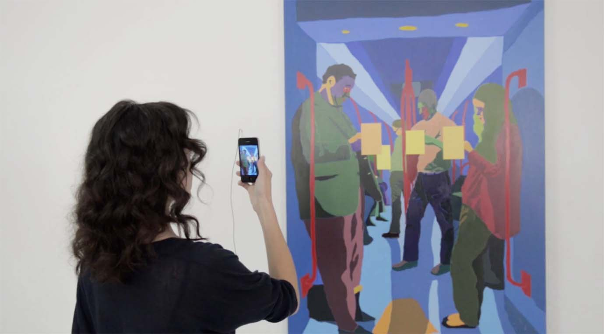

Augmented-reality installation soundtrack, sound design and interactive audio programming

An augmented-reality art installation in which users interact with artworks using smartphones or tablets and headphones. I created the soundtrack and sound design, and programmed the audio interaction using Pure Data. Finalist in the SIGGRAPH 2014 AR contest.